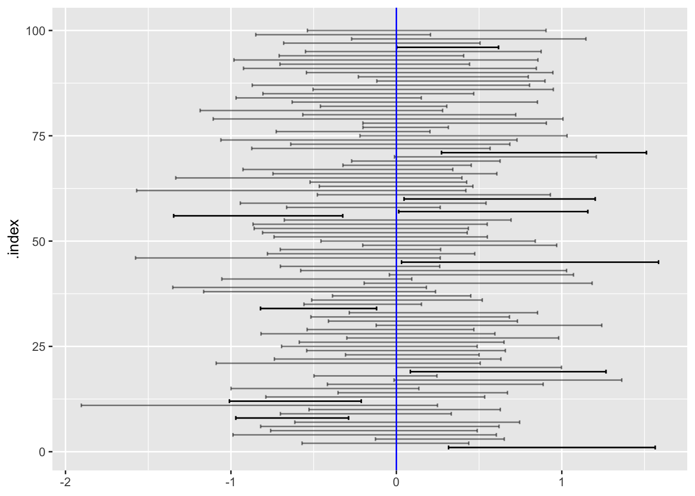
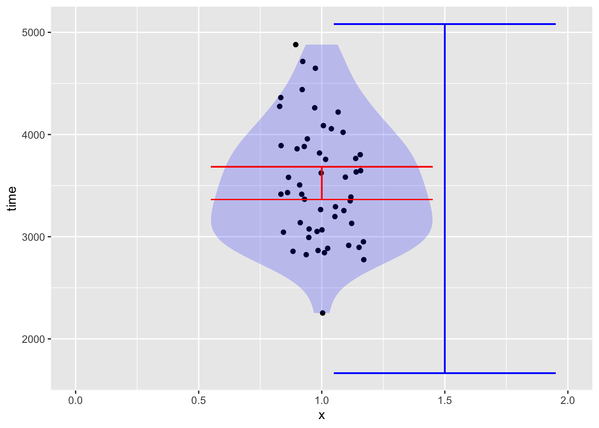
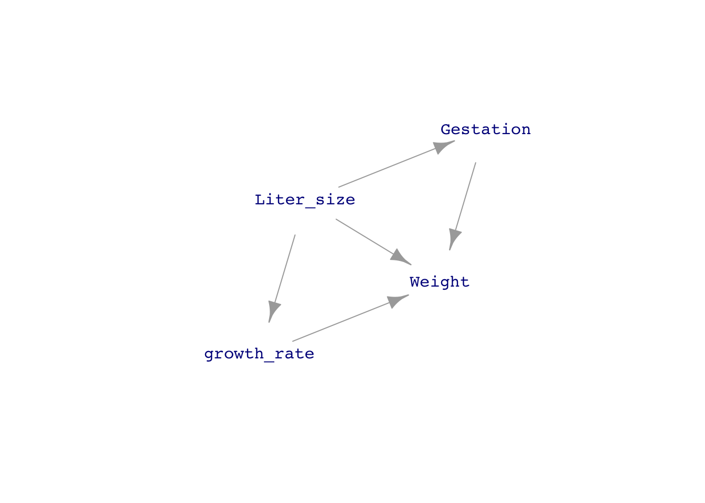
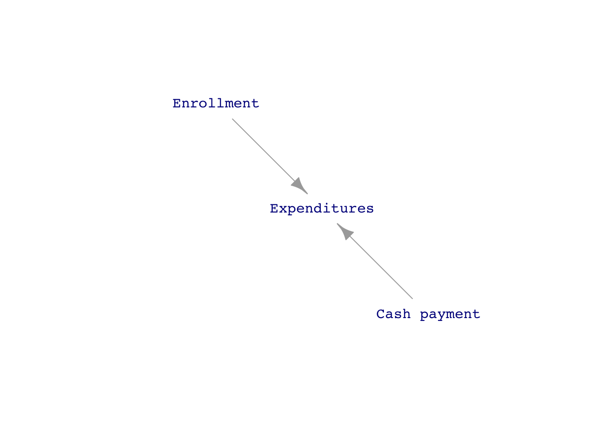
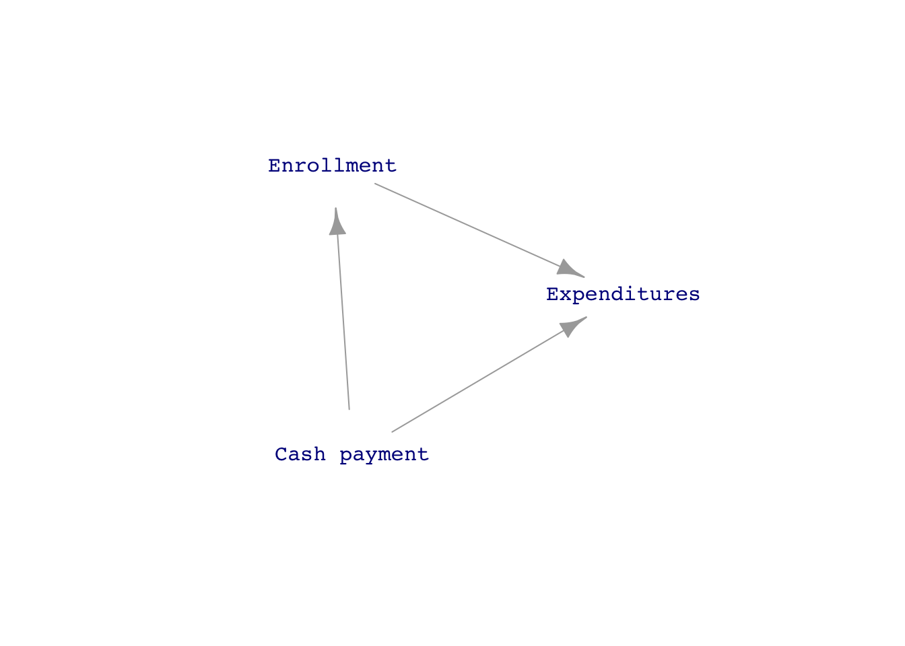
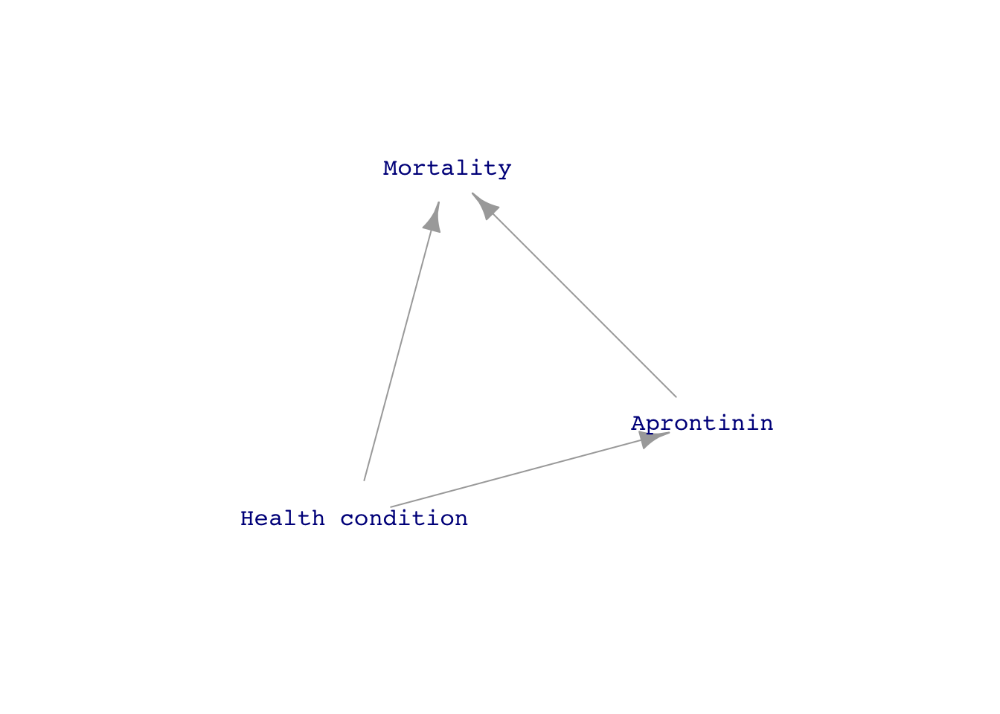
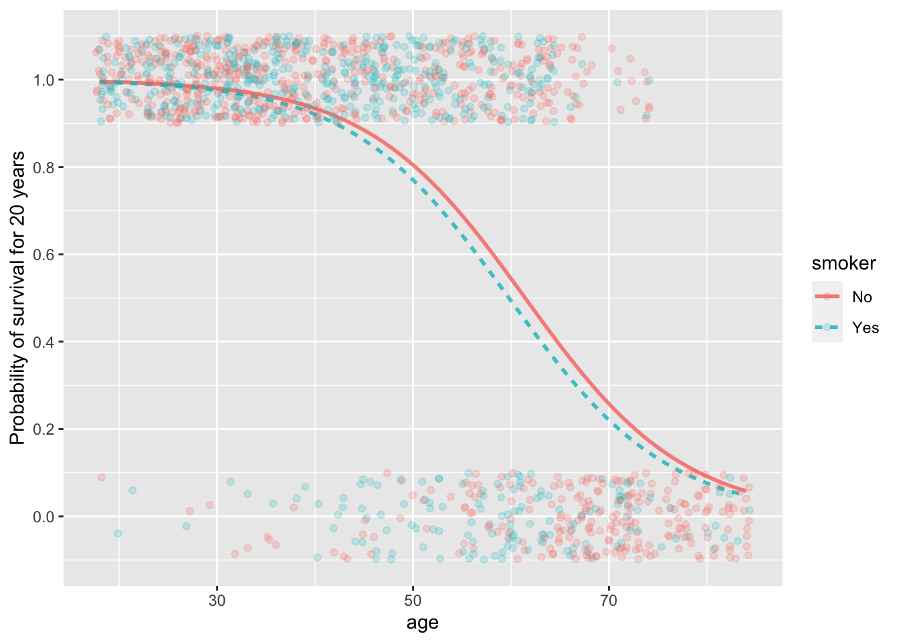

one_trial <- function(n=2) {
vals <- rnorm(n)
tibble(m = mean(vals), s = sd(vals))
}A little more detail
Put the odds and ends here, then sort them out.
Standard errors, margins of error, and confidence intervals
Tiny \(n\) (optional)
When you have a very small sample size—say, \(n=2\)—the values may coincidentally be very close together. Around 1907, William Gosset, a scientist at Guinness, discovered that such coincidences force “twice” to be \(> 2\) in order to produce confidence intervals that reliably cover the mean of the data-generating process. Gosset’s particular interest was in making sense of Guinness’s standard testing protocols, which involve averaging the results from three small batches of beer ingredients. Contacting the leading statisticians of the day, Gosset was told that such small \(n\) is “brewing, not statistics.” Nonetheless, Gosset had to work within Guinness’s testing protocols, which were indeed brewing but still needed statistical interpretation.
Gosset carried out trials by hand, a large number of measurements from a study of criminals’ hand sizes. (They did this kind of thing in 1900.) Each measurement was written on a card. A trial consisted of drawing \(n\) cards from the deck and calculating the mean and standard deviation of the measurements. Using computers, we can simulate the calculation of results from a Gosset-like trials using a simple function that calculates the mean and standard deviation of data from a Gaussian distribution.
We can pick a small \(n\) and running many trials using a candidate value for “twice.”
::: {.callout-warning} ## IN DRAFT
CONVERT the beta to something named twice.
n=10
beta <- 2 / sqrt(n)
Trials <- do(100) * one_trial(n=n) %>%
mutate(left = m - beta*s, right = m + beta*s)
gf_errorbarh(.index ~ left + right, data = Trials, alpha=0.5) %>%
gf_errorbarh(.index ~ left + right,
data = Trials %>% filter(left > 0 | right < 0)) %>%
gf_vline(xintercept = ~ 0, color="blue", inherit=FALSE)
Gosset effectively tabulated the \(\beta\) multipliers
| n | \(\beta\) | \(t = \beta / \sqrt{\strut n}\) |
|---|---|---|
| 2 | 8.98 | 12.7 |
| 3 | 2.48 | 4.30 |
| 4 | 1.59 | 3.18 |
| 5 | 1.24 | 2.78 |
| 6 | 1.04 | 2.57 |
| 7 | 0.92 | 2.44 |
| \(\vdots\) | ||
| 10 | 0.72 | 2.26 |
| 15 | 0.55 | 2.14 |
| 20 | 0.47 | 2.09 |
| 50 | 0.28 | 2.01 |
| 100 | 0.20 | 1.98 |
| 500 | 0.088 | 1.96 |
| 1000 | 0.062 | 1.96 |
You can see that for \(n\) bigger than 10 or 20, the \(t\) multiplier is 2. But for very small \(n\), the t-multiplier can be considerably larger.
You can see the wisdom of brewers here. They made tests by averaging measurements from three small batches of beer. If they had used only two batches, the confidence interval would be almost three times larger than for \(n=3\), making it very hard to conclude anything about whether the tests show the ingredients to be within the quality-control standards.
Gosset’s work was published under the pseudonym “Student,” since Guinness forbade employees to publish under their own names. Statisticians, recognizing the value of the work (and knowing the name behind the pseudonym), came to use the name \(t\), perhaps because tea was considered more refined than “beer.” In many statistics texts, you will see the phrase “Student t” to refer to how Gosset’s work is used.
Interaction
RETURN TO THIS MODEL, but add an interaction.
Mod3 <- lm(list_price ~ hard_paper + num_pages, data = amazon_books)
model_eval(Mod3, hard_paper = c("P", "H"), num_pages=c(200, 400))| hard_paper | num_pages | .output | .lwr | .upr |
|---|---|---|---|---|
| P | 200 | 14.52494 | -12.641928 | 41.69182 |
| H | 200 | 19.48253 | -7.785720 | 46.75077 |
| P | 400 | 18.43605 | -8.709404 | 45.58151 |
| H | 400 | 23.39363 | -3.847698 | 50.63497 |
Prediction interval
Demonstration: Simple-minded data analysis shows why
We constructed our model of running time using the “linear least-squares” modeling methodology implemented by the lm() model-training function. For the purpose of demonstration, we’ll show you a simple-minded method to make a prediction. This simple-minded method would give results more or less equivalent to the least squares method if we had an almost infinite amount of data. Since we don’t, the simple-minded method is not as reliable as the least-squares method.
Remember our goal: to predict the running time for a 10km race with a 500m climb. All that we have to inform the prediction is the historical data contained in the Hill_racing data frame. The simple-minded method is … well … simple to understand. We will pull out from the Hill_racing data frame those rows where the race distance is close to 10km and the race climb is close to 500m. For example:
close_rows <- Hill_racing %>%
filter(9 <= distance, distance <= 11,
450 <= climb, climb <= 550)
## the prediction
close_rows %>% summarize(sample_size=n(), pred = mean(time))| sample_size | pred |
|---|---|
| 52 | 3523.481 |
You might not agree with our definition of “close to 10km” as “between 9 and 11”, and similarly for climb.
To get the confidence interval on this simple-minded prediction, we point out that the value of the mean time is the same as the coefficient from the model time ~ 1. Let’s fit that model formula to the close_rows and look at the coefficient and confidence interval.
simple_mod <- lm(time ~ 1, data = close_rows)
simple_mod %>% coefficients()| coefficient | |
|---|---|
| (Intercept) | 3523.481 |
simple_mod %>% confint()| lwr | upr | |
|---|---|---|
| (Intercept) | 3363.901 | 3683.061 |
To interpret this confidence interval, we can plot the actual running times and compare them to the interval, as in Figure 1
ggplot(close_rows, aes(y=time, x=1)) +
geom_jitter(width=0.2) + xlim(0,2) +
geom_violin(fill="blue", alpha=0.2, color=NA) +
geom_errorbar(aes(ymin=3364, ymax=3683), color="red") +
geom_errorbar(aes(ymin=1665, ymax=5082, x=1.5), color="blue")
Hill_racing with a distance close to 10km and climb close to 500m. The confidence interval on the mean time (shown in red) is narrow compared to the prediction interval (blue) calculated from the whole data frame and the model time ~ distance + climb.
Example: A missed historical opportunity
Sewall Wright (1889-1988) was an American geneticist and statistical pioneer. One of his statistical inventions is the “coefficient of determination” now universally called R2 and a widely used, basic summary of statistical models. In 1921, he invented “path analysis.” One of his “path diagrams” is shown in ?@fig-path-guinea-pig.
[1] "GET THIS FROM p.75 of the *Book of Why*"His path diagrams are directed acyclic graphs, DAGs, augmented with coefficients representing the relative strength of each contributor to a node. He worked out the algebra of the correlation induced by the graph between any two nodes. Then, by measuring the R2 between pairs of nodes, he was able in some cases to work backwards to numerical values for the coefficients.
Wright’s path diagrams are the historically earliest form of our DAGs. In his honor, we’ve constructed a DAG to represent one of his calculations, how much the body weight at birth of a guinea pig increases due to one day longer in the womb. The path diagram Wright imagined is drawn below, though we have left out the coefficients from the display.

We can’t measure the growth rate directly, but we can measure liter size, gestation length, and birth weight. But how can we estimate the direct effect of growth rate when it is confounded with the other causal pathways?
Sewall’s breeding experiments would have provided data like this:
| liter_size | growth_rate | weight |
|---|---|---|
| 5 | 4 | 86 |
| 5 | 5 | 109 |
| 5 | 6 | 110 |
| 5 | 5 | 96 |
| 6 | 4 | 80 |
| 5 | 5 | 99 |
You might think that weight gain per day of gestation can be simply calculated as weight/gestation, but this ignores the fact that weight gain is slow early in gestation and faster as the cubs develop. Instead, using a model weight ~ gestation lets us look at the marginal impact of an extra day of gestation. The coefficients from this model indicates that weight increases by 6.8 grams per extra day of gestation.
lm(weight ~ gestation, data = Pigs) %>% confint()| lwr | upr | |
|---|---|---|
| (Intercept) | -41.516920 | -23.371468 |
| gestation | 6.360907 | 7.320027 |
But Wright knew that this number was misleading. Larger liters tend to have shorter gestation times. And larger liters produce cubs that weigh less. With more computational power available to us, we can use a simpler calculation to incorporate these facts into the estimation of weight gain per day of gestation:
lm(weight ~ gestation + liter_size, data = Pigs) %>% confint()| lwr | upr | |
|---|---|---|
| (Intercept) | 93.676267 | 114.720621 |
| gestation | 4.136628 | 4.868731 |
| liter_size | -19.026171 | -16.829170 |
This model pegs the growth rate at about 4.5 grams per day.
Since we generated the data from a DAG, we have the luxury of measuring the actual growth rate used for each liter.
Pigs %>% summarize(rate = mean(growth_rate))| rate |
|---|
| 4.843128 |
Covariates help us deal with confounding! Unfortunately, the statistical bigwigs of the 1920s through 1950s poo-pooed Wright’s ideas about path analysis. They were rehabilitated only the the 1980s.
DAGs and covariates
WHAT CHAPTER DID THE SPENDING and aprotonin examples COME FROM?
The argument, “reduce spending by reducing spending” is very compelling, common sense even. It’s harder to see how reducing spending in one area—the cash payment to people not on the insurance plan—can increase spending overall. I might have been more successful convincing the college budget committee not to eliminate the cash payment if they had understood the language of DAGs. Figure 2 shows two competing DAGs for the situation:


The people on the budget committee saw clearly the direct link between the cash payment and total expenditures and likely would not have disputed a direct link between enrollment and expenditures. But they didn’t imagine a link between the cash payment and enrollment. I did, because I knew of several colleagues who used their spouse’s companies insurance plan, even though it was identical to the college’s plan.
The situation with the drug aprotinin is similar.


Example: A bookies’ calculations [NEEDS FIXING]
The most familiar use of “odds” is in gambling. For instance, a famous song lyric puts the odds of Valentine winning the horse rate “at five to nine.” Less musically, this odds is \(5/9 = 0.5555\), but the two-number format makes particular sense for keeping track of bets. Five-to-nine describes a bet of one unit. The second number, 9, specifies the amount the gambler is staking on the outcome. On a loss, the gambler loses that stake. On a win, the gambler gets back the stake and, in addition, gets the amount specified by the first number. So a winner at five to nine would leave the racetrack with an extra $5. But on a loss, the gambler leaves $9 behind.
A “bookie” is someone who provides a service. You can go to a bookie to lay a bit. In drama, this might be done by telephone: “Lay $90 on Valentine” is all the gambler needs to communicate. No money has to change hands. On a win, the bookie will return $50 to the gambler. On a loss, the gambler has a debt of $90.
A bookie is not a gambler; he’s an accountant who records numbers. The bookie arranges these numbers so that he makes money. To see this, imagine a horse race including Valentine, Paul Revere, and Epitaph. To start, the bookie specifies odds on each possible outcome, say 5:9 for Valentine, 1:3 for Paul Revere (a favorite!), and 1:2 on Epitaph.
If the bookie has a good nose, about a third of the stakes will be bet on each outcome. If not, as new bets come in the bookie raises or lowers the odds to encourage or discourage bets so that the roughly one-third of stakes are placed on each outcome. Suppose at the end of the day that $500 is staked on each of the three outcomes.
WRONG WRONG WRONG. It needs to work that the winning returned for Valentine has to be less than the stakes on the other horses, and similarly for all horses. So if $100 is bet on Valentine we need $100 staked on the other horses.
Added up, these odds are \(5+1+1=7\) on the top and \(9+2+1=12\) on the bottom. It’s important—for the bookie—that the odds are arranged so that the bottom number is larger than the top number: 12 is larger than 11. Note that this method of adding is simpler than combining fractions. To add the fractions \(1/2\) and \(1/3\) gives \(5/6\). But to combine the odds \(1:2\) and \(1:3\) gives \(2:5\). One more detail is needed for a real-life bookies, taking into account the size of each bet. For instance, a $5 bet at 5:9 would be recorded as 25:45.
Now the race is run. The winner is … well … from the bookie’s point of view it doesn’t matter who wins.
“Irrationality”
[From The Model Thinker, p. 52]
Gain Framing: You have two options
Option A) Win $400 for certain
Option B) Win $1000 if a fair coin comes up heads and $0 if tails
Loss Framing: You are given $1000 and have two options:
Option a) Lose $600 for certain
Option b) Lose $0 if a fair coin comes up heads and lose $1000 if tails.
Hyperbolic discounting: see pp 52-43
“Prospect theory”, Kahneman and Tversky (1979) “Prospect theory: an analysis of decisions under risk,” Econometrica 47(2):263-291 link to paper
::: {.callout-note} ## Example
A subtle modification to the linear model architecture allows the modeller to guarantee that the output will be between zero and one. The modified architecture, called “logistic regression”, is therefore well suited to modeling categorical response variables, where the model output will be interpreted as a probability.
Figure 4 shows a logistic model of survival as a function of age and smoking status. Notice that in the logistic model, the effect of smoking on survival is negative, particularly for people around age 50. The logistic architecture provides an intrinsic flexibility which avoids the undue influence of the very young and very old, for whom survival is close to 100% or 0 respectively regardless of smoking status.
Scale for 'y' is already present. Adding another scale for 'y', which will
replace the existing scale.
Many hypotheses
Self-driving car safety here?
But there are also different situations. For instance, the observation might be the mean of a sampled variable, or it might be the difference in sample means between two groups, or even the calculated effect size from a model fitted to a sample. In such situations, the possible hypotheses form a continuum, one hypothesis for each point on the number line.
Orthodox
We are nearing the end of our journey through the world of statistical thinking. But I think it’s time to get off the well-travelled road and take a detour of a few paragraphs. Detours are usually not the straightest path between two points, but they often have some advantage: safety, a scenic view or inspiring experience, and such.
Our detour starts with a turn onto a lane marked with the word “orthodox.” There are, as you know, religions denominated by “orthodox.” But the word has a more general meaning that can be seen by translating the Greek origin words “ortho” and “doxa” into a familiar language: “ortho” means “straight” or “right”; “doxa” means “belief”. Synonyms for “belief” include creed, dogma, teaching, doctrine (which stems from the Latin for “to teach”), conviction, and article of faith. A line is straight and the phrase “the party line” indicates attitudes that fall into line with the party leadership. “Ortho” appears in “orthodonture” (straightening the teeth), “orthography” (correct spelling), and “orthogonal” (being at a right angle).1
To “true a wheel” means to set it straight, and the phrase “true believer” does not refer to someone whose beliefs are correct but rather to someone who stays in line with to a particular system of belief. There can be many different systems of belief, many different orthodoxies, and disagreeing parties can each have their distinct line.
There are two major orthodoxies of statistical thought, “frequentists” and “Bayesians,” a fact that’s important to keeping straight the variety of statistical nomenclature. The key distinction between the frequentist orthodoxy and that of the Bayesians, is their attitude toward the meaning of “probability.” One sect, the “frequentists,” bases their methodology in a supreme being they call the “population.” Coin flips are an example of a population; an abstractly infinite supply of events. The probability of “heads” is the frequency of a head turning up in \(n\) trials, where \(n \rightarrow\infty\). Flipping coins an infinite number of times is still a work in progress. Until it is complete, we need to work with the probability of heads as the proportion of a large but finite number of trials in which the outcome is “heads.”
In contrast, the “Bayesian” sect holds that a probability is a statement about belief. Different people, depending on their experiences, will rightly come to different conclusions about the probability of the outcome of an event. Bayesians will happily deal with a statement like, “the probability of rain tomorrow is 60%,” while frequentists might respond (while packing an umbrella in their knapsack for tomorrow’s weather) by pointing out that there is no “population” of “tomorrows” from which we can draw a sample to estimate the frequency of rain.
For a frequentist, the hypothesis “April showers bring May flowers” is an assumption. There is no actual population from which to draw many trials, so a probability cannot be assigned to the hypothesis. In the frequentist liturgy, to test the hypothesis means to make a simulation of the world. Typically the simulation implements a world in which it is hard coded that the connection described by the hypothesis does not exist. This no-connection hypothesis is generically called the “Null hypothesis.” In this case, the Null hypothesis states that there is no association between April showers and May flowers.
Constructing a simulation that generates data from the Null hypothesis is easy. Take the real-world data recording the observations of April precipitation and May floration. Randomly shuffle the entries in the April column while holding the May column fixed. The shuffling destroys any systematic association between the April and May columns. Any measured association in the shuffled data is incidental and accidental.
Run many trials of the shuffling simulation. In each trial, record the measured association. It’s reasonable to expect that the measured association across the trials will be close to zero. Indeed, you use the trial results to define what “close to zero” means. Then look back at the association found in the real-world, unshuffled data. If that observed association falls within the definition of “close to zero,” then it is not fair to insist that the real-data is inconsistent with the Null hypothesis. That is, you “fail to reject” the Null hypothesis. On the other hand, if the observed association falls outside the bounds of “close to zero,” then you are entitled to reject the Null hypothesis.
Notice that the simulation mechanism provides a population— a “hypothetical planet” to use the language of Lesson 34—from which many samples could be drawn. Thus, it’s straight thinking for the frequentists to assign a probability to the event “a simulation trial will generate a result at least as extreme as what was observed in the real world.” This probability, in the lingo of hypothesis testing, is called a “p-value”.
In my opinion, it would have been better for everyone to rename the p-value as the \({\cal L}\)-value. After all, it’s a likelihood, a proportion calculated on a hypothetical planet.
For many people, the orthodoxy that “hypothesis testing” can properly lead only to one of two conclusions—“reject” or “fail to reject” the Null hypothesis—seems stilted and overly rigid. Like others who are not aligned with orthodoxy, they will translate the orthodox result into language that they find reasonable and more comfortable. For instance, they will say that the p-value is the probability that the Null hypothesis is true. Or, they interpret a small probability for the Null hypothesis—what should properly lead to “rejecting” the Null hypothesis—as an indication that the original hypothesis is to be “accepted” as true. And “failing to reject” often gets (mis-)interpreted as meaning the original hypothesis is not true.
The ministers of orthodoxy—statistics professors, for example—will point out that such (mis-)statements are a sign of wrong thinking. The ministers exert such power as they have to set straight the strays among the flock, for instance by giving low scores on a course final examination. In practice, limited as it is to the examination room, this punishment rarely leads to a repentant and binding return to frequentist orthodoxy.
The Bayesian orthodoxy is more permissive. It accepts as legitimate statements involving probability, such as “Hypothesis A is less likely than Hypothesis B.”
In Lesson 35 we used a Bayesian approach to address two hypotheses that were relevant to a disease C. Once the data are in—say, a test result of + in the Lesson 35 example—we can use the likelihoods (sensitivity and specificity) and the disease prevalence to calculate the probability that, for a + test result, the patient actually has C.
The frequentists don’t disaggree with the legitimacy of a likelihood. That is just a probability under the assumption that a given hypothesis is true. Where they depart from the Bayesians is in accepting the “probability of a hypothesis.” For, in order to calculate the relative probability of two hypotheses, you need to combine the likelihoods with a prior idea of how likely the hypotheses were in the first place. Frequentists assert that any such prior ideas are subjective.
Few people will disagree with the idea that good science ought to be objective. Yet allowing some scope for subjectivity can lead to better informed decision-making. To illustrate, let’s tell a story that illustrates the benefits of assigning a probability, subjective though it may be, to a hypothesis.
Imagine you are a doctor. A long-time patient comes to your clinic. His recent symptoms have him thinking that there is a strong chance he might have cancer. You, the doctor, ask questions about the patient’s symptoms and do a brief physical examination.
A standard medical practice is to construct a “differential diagnosis”. In doing this, you construct a mental list of the medical disorders that might account for the symptoms and examination results. Since you have extensive training and experience, this list might be long and contain disorders that are relatively common and some that are rare.
To keep the story simple, let’s make the list of plausible disorders unrealistically short: the patient either has cancer or has the flu. Each of these is a hypothesis. Continuing the process of differential diagnosis, you, the doctor, consider what medical steps might point in favor of one hypothesis or the other. For instance, you could order a tissue biopsy. Less invasive and less costly, you could decide on ordering a magnetic resonance imaging (MRI) or, simpler, using a medical screening test for cancer. Or you might even direct the patient to take some over-the-counter flu treatment and report back in two weeks if the symptoms haven’t resolved.
In medical school, you learned a mantra: “When you hear hoofbeats, think horses, not zebras.” Zebras are very rare in most parts of the world, horses much less so. So horses are a much more likely source of hoofbeats than are zebras.
To make an appropriate decision, you consider what you know about the patient. Had he just finished a round of chemo-therapy six months ago? If so, an MRI might be a good choice. Is the patient elderly? The elderly as a group have a greater risk of developing cancer than the young. So for an elderly patient, you might decide on ordering a screening test. Does the patient have a history of good health and an active imagination? Then the flu medication might be the right road to go down.
A Bayesian would interpret this decision-making process in terms of probabilities. You assign, based on your observations, a probability to each hypothesis. If the probability of the cancer hypothesis is much smaller than the probability of flu, and if the cost of making a mistake (as measured by a “loss function,” see Lesson 34) is small, the flu medication is a good next step. But if the probability of cancer is not so small, and the cost of a delay is high, then ordering the screening test seems appropriate.
Footnotes
The link between words for “straight” and thinking according to the rule book has ancient origins. The word “canon,” meaning the set of officially accepted writings, comes from the Sumerian word for a straight reed.↩︎